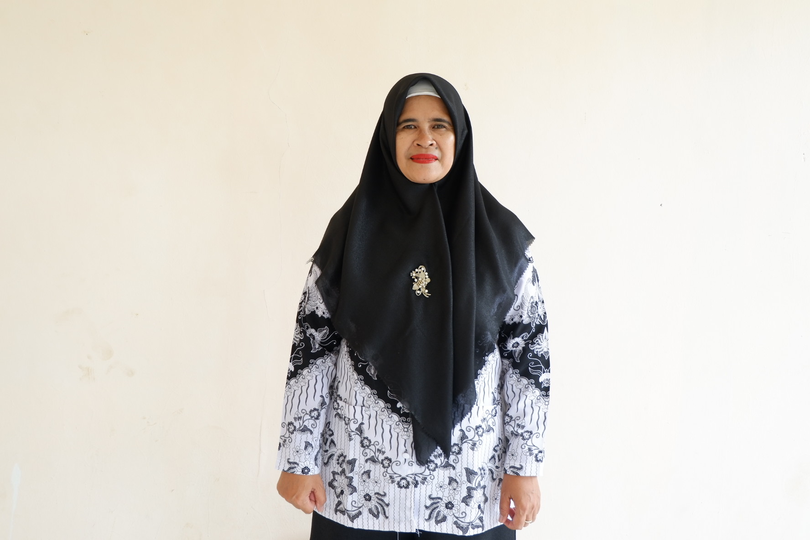

Selamat Datang di SMPN 5 Gegerbitung
Membangun generasi yang berkarakter, berprestasi, berwawasan luas, dan siap menghadapi masa depan dengan semangat belajar yang positif.

SMPN 5 Gegerbitung
Kp. Cimonteng, Desa Caringin, Kecamatan Gegerbitung, Kabupaten Sukabumi
SMPN 5 Gegerbitung
SMPN 5 Gegerbitung merupakan sekolah menengah pertama di Kabupaten Sukabumi yang berkomitmen memberikan pendidikan berkualitas dan membangun karakter peserta didik.
Visi & MisiBelum diatur melalui dashboard admin.
Belum diatur melalui dashboard admin.
Kp. Cimonteng Rt 15/5, Desa Caringin, Kecamatan Gegerbitung, Kabupaten Sukabumi
Sambutan Kepala Sekolah

Selamat datang di website resmi SMPN 5 Gegerbitung. Mari bersama membangun lingkungan pendidikan yang aman, inspiratif, dan berprestasi.
Nengsri Rohimah, Munazah, S.Pd., M.Pd.
Guru & Tendik
Kenali guru dan tenaga kependidikan SMPN 5 Gegerbitung.
Berita & Kegiatan Terbaru
Informasi terbaru dari SMPN 5 Gegerbitung.
Kegiatan Sekolah
Program Unggulan
Galeri
PPDB SMPN 5 Gegerbitung
Informasi persyaratan, jadwal, jalur pendaftaran, dan tautan pendaftaran akan ditampilkan di sini.
Informasi PPDB